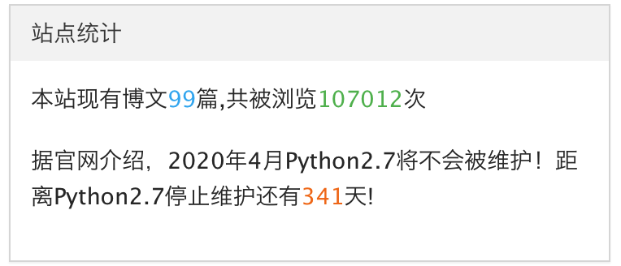
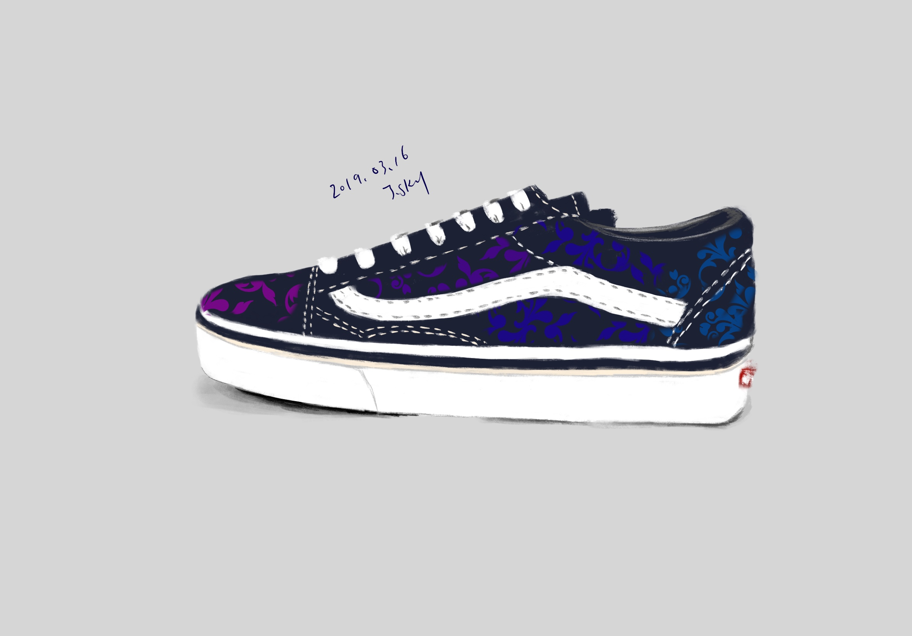
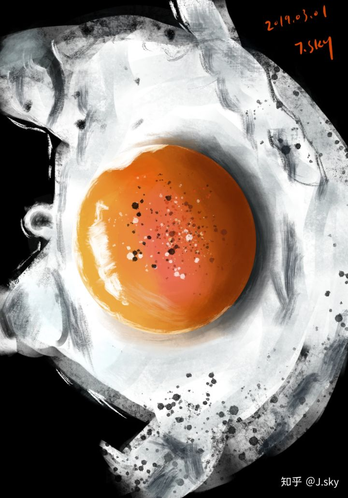
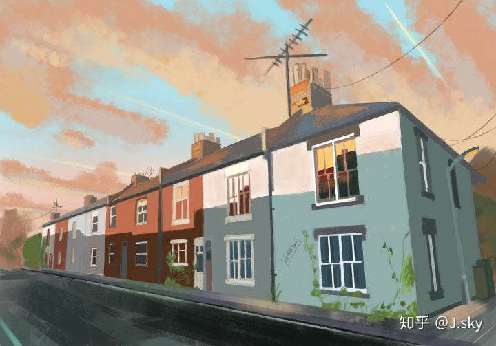
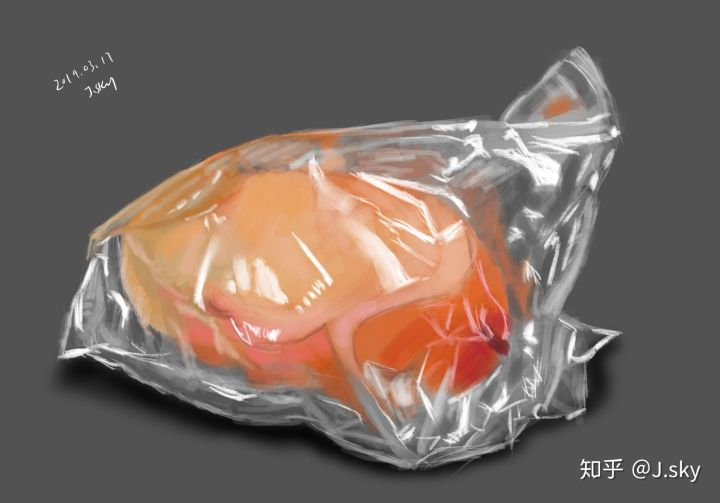
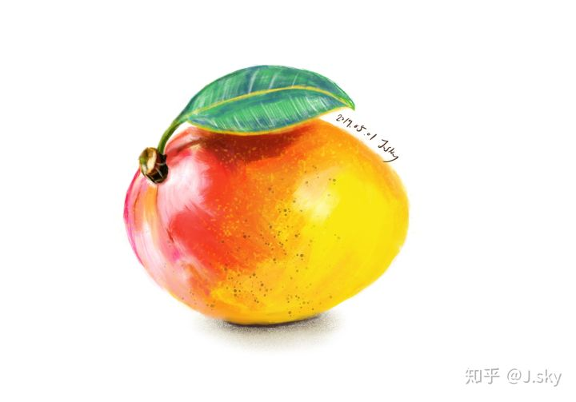

写在我的博客PV10万时：聊聊编程与画画
作者:J.sky 发布时间:2019-05-14 09:11:29 Tag:
站长吐槽

转眼间我的blogPV流量已经达到10万+了，2017年8月25日 01:09，我发布了网站更新记录，至此blog运行已有快二年了，没想到PV会达到10万。
回想学习Python大约也有二年多了，这一路走来也是蛮辛苦的，自学需要自己填坑补洞修bug，痛苦与快乐并存吧。
贴几张近作，显吧一下吧





为什么要提到画画，去年的夏天给孩子报了美术班，然后自己也就随便画画，然后就一发不可收拾，坚持画画一直到现在，感触也是蛮多的。
编程和画画的思考方式在某些方面还是有相同点的，例如编程的架构就好比画画的草稿，草稿打好了才可以细致的刻画。若程序的需求本身是一幅画，那么打好草稿，细致刻画细节，就可以使程序本身更人性化，更符合预期的要求。有的时候我就觉得，程序员本身真的应该的体验一下绘画带来的乐趣。
自学画画一年感觉要比编程10年前的成就感强很多，这些年编程没写过多少像样的应用，五个手指都能算出来，或许编程要比绘画更严谨，更需要思考。
未来还有很多打算，包括编程初期的一些梦想都想去实现，比如开发一款游戏，自己原画角色，场景，并利用现有的游戏框架编写成型。完成现有的程序代码的编写，继续优化维护，继续坚持画画强化绘画技能，或许能力的提高会更加丰富原有的梦想。
还有三年的时候blogPV达到百万（是不是有点飘了？），下半年继续更新blog，继续学习Python Django PYgame等。
wxPython编程学习笔记(10)wx.FileDialog文件选择框
作者:J.sky 发布时间:2019-01-05 14:41:02 Tag:
Python GUI

wx.FileDialog文件选择框
'FileDialog'是一个文件选择框，我们可以根据弹出框选择文件，确定后返回该文件的地址。
创建
dlg = wx.FileDialog(parent, message=None, defaultDir=None, defaultFile=None, wildcard=None, style=None, pos=None, size=None, name=None)
dlg.GetPath()#返回文件地址字符串
其打开方式和其它弹出窗口一样有模态和非模态，当按下确认按钮后，返回一个文件地址字符串。
我做了一个测试，代码下边跑跑看吧，希望能帮助到你。
import wx
import os
import time
class MyFrame(wx.Frame):
def __init__(self, *args, **kwds):
kwds["style"] = kwds.get("style", 0) | wx.DEFAULT_FRAME_STYLE
wx.Frame.__init__(self, *args, **kwds)
self.SetSize((400, 300))
self.text_ctrl_1 = wx.TextCtrl(self, wx.ID_ANY, "")
self.button_1 = wx.Button(self, wx.ID_ANY, u"选择文件")
self.text_ctrl_2 = wx.TextCtrl(self, wx.ID_ANY, "")
self.__set_properties()
self.__do_layout()
def __set_properties(self):
self.SetTitle("frame")
self.button_1.Bind(wx.EVT_BUTTON,self.onButton_1)
def __do_layout(self):
sizer_1 = wx.BoxSizer(wx.VERTICAL)
sizer_3 = wx.BoxSizer(wx.HORIZONTAL)
sizer_2 = wx.BoxSizer(wx.HORIZONTAL)
sizer_2.Add(self.text_ctrl_1, 1, wx.ALL, 0)
sizer_2.Add(self.button_1, 0, 0, 0)
sizer_1.Add(sizer_2, 0, wx.ALL | wx.EXPAND, 0)
sizer_3.Add(self.text_ctrl_2, 1, wx.ALL | wx.EXPAND, 0)
sizer_1.Add(sizer_3, 1, wx.ALL | wx.EXPAND, 0)
self.SetSizer(sizer_1)
self.Layout()
def onButton_1(self,e):
print("按钮事件")
dlg = wx.FileDialog(self, message="选择一个文件", defaultDir=os.getcwd(), style=wx.FD_OPEN)
ret = dlg.ShowModal()
if ret == wx.ID_OK:
print(dlg.GetPath()) # 文件地址
self.text_ctrl_1.SetValue(dlg.GetPath())
fp = os.path.join(dlg.GetPath()) # 组装文件地址
###输出到弹出信息窗口的字符拼装。
retstr = str(self.get_FileSize(fp)) + "\n" + self.get_FileAccessTime(fp) + "\n" + self.get_FileCreateTime(
fp) + "\n" + self.get_FileModifyTime(fp)
self.text_ctrl_2.SetValue(retstr)
dlg.Destroy()
# 把时间戳转化为时间: 1479264792 to 2016-11-16 10:53:12
def TimeStampToTime(self, timestamp):
timeStruct = time.localtime(timestamp)
return time.strftime('%Y-%m-%d %H:%M:%S', timeStruct)
# 获取文件的大小,结果保留两位小数，单位为MB
def get_FileSize(self, filePath):
fsize = os.path.getsize(filePath)
return fsize
# 获取文件的访问时间
def get_FileAccessTime(self, filePath):
t = os.path.getatime(filePath)
return self.TimeStampToTime(t)
# 获取文件的创建时间
def get_FileCreateTime(self, ilePath):
t = os.path.getctime(ilePath)
return self.TimeStampToTime(t)
# 获取文件的修改时间
def get_FileModifyTime(self, filePath):
t = os.path.getmtime(filePath)
return self.TimeStampToTime(t)
class MyApp(wx.App):
def OnInit(self):
self.frame = MyFrame(None, wx.ID_ANY, "")
self.SetTopWindow(self.frame)
self.frame.Show()
return True
if __name__ == "__main__":
app = MyApp(0)
app.MainLoop()
本文源码下载：
wxPython编程学习笔记(09)wx.Python Menu 菜单
作者:J.sky 发布时间:2019-01-03 18:08:40 Tag:
Python GUI

Menu 菜单
菜单是程序经常用到的小部件，我们来看看如何创建。
self.menubar = wx.MenuBar()#创建一个程序菜单
self.fileMenu = wx.Menu()#创建一个一级菜单，这个菜单里可以继续加入菜单，就可以产行二级菜单
self.new = wx.MenuItem(self.fileMenu,9,"new")#创建菜单项
self.fileMenu.Append(self.new)#添加菜单项
以上这几个操作就可以创建一个菜单及菜单项了
wxPython 右键菜单
创建方法，可以先创建一个菜单类class MyPopupMenu(wx.Menu)
然后再类中添加菜单项，最后在窗口程序中添加右键绑定一个事件：self.Bind(wx.EVT_RIGHT_DOWN, self.OnRightDown)
然后事件函数中生成这个菜单self.PopupMenu(MyPopupMenu(self), e.GetPosition())
这样，窗口程序中就有一个右键菜单了，完整的代码再下边，可以跑跑试试
import wx
class MyPopupMenu(wx.Menu):
def __init__(self, parent):
super(MyPopupMenu, self).__init__()
self.parent = parent
mmi = wx.MenuItem(self, wx.NewId(), 'Minimize')
self.Append(mmi)
self.Bind(wx.EVT_MENU, self.OnMinimize, mmi)
cmi = wx.MenuItem(self, wx.NewId(), 'Close')
self.Append(cmi)
self.Bind(wx.EVT_MENU, self.OnClose, cmi)
def OnMinimize(self, e):
self.parent.Iconize()
def OnClose(self, e):
self.parent.Close()
class HelloFrame(wx.Frame):
def __init__(self, *args, **kw):
#调用父类的创建方法
super(HelloFrame, self).__init__(*args, **kw)
self.menubar = wx.MenuBar()#创建一个程序菜单
self.fileMenu = wx.Menu()#创建一个一级菜单，这个菜单里可以继续加入菜单，就可以产行二级菜单
self.new = wx.MenuItem(self.fileMenu,9,"new")#创建菜单项
self.fileMenu.Append(self.new)#添加菜单项
self.editMenu = wx.Menu()
self.copyItem = wx.MenuItem(self.editMenu, 100, text="copy", kind=wx.ITEM_NORMAL)
self.editMenu.Append(self.copyItem)
self.cutItem = wx.MenuItem(self.editMenu, 101, text="cut", kind=wx.ITEM_NORMAL)
self.editMenu.Append(self.cutItem)
self.pasteItem = wx.MenuItem(self.editMenu, 102, text="paste", kind=wx.ITEM_NORMAL)
self.editMenu.Append(self.pasteItem)
self.fileMenu.Append(22, "Edit", self.editMenu)
self.fileMenu.AppendSeparator()
self.fileMenu.AppendSeparator()#分隔线
self.qmi = wx.MenuItem(self.fileMenu, 1, '&Quit\tCtrl+Q')
self.fileMenu.Append(self.qmi)
self.Bind(wx.EVT_MENU, self.OnQuit, id=1)
self.menubar.Append(self.fileMenu, '&File')
self.SetMenuBar(self.menubar)
self.Bind(wx.EVT_RIGHT_DOWN, self.OnRightDown)
def OnRightDown(self, e):
self.PopupMenu(MyPopupMenu(self), e.GetPosition())
def OnQuit(self, e):
self.Close()
def main():
app = wx.App(False)
frm = HelloFrame(None, title='wx.MenuBar 菜单',)
frm.Show()#显示窗口
app.MainLoop()#持续更新窗口
if __name__ == '__main__':
main()
本文源码下载：
Python os.mknod 运行报错无法创建文件
作者:J.sky 发布时间:2018-12-27 10:47:01 Tag:
Python基础
import os file = os.path.join(os.path.dirname(file),'17python888.txt') os.mknod(file)#运行到此处，就会报错
# 解开注释，用下边的方法试试
# with open(file, mode='a',encoding='utf-8') as f:
# pass
前几天因为要创建一个文件，但是osx下边却发生了错误，可以运行上边的代码试试
os.mknod(file)#运行到此处，就会报错
PermissionError: [Errno 1] Operation not permitted
这个错误是由于linux系统权限不够，这可真是一个坑。
那么怎么办?
网上查了一下，可以用open()方法，咱试试。
通过测试，使用open()方法mode="a"即可搞定文件的创建。